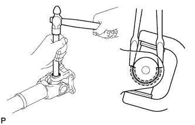
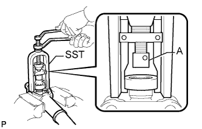
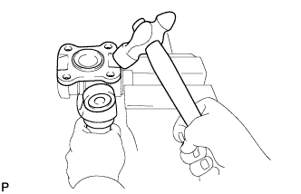
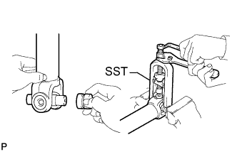

PROPELLER SHAFT ASSEMBLY > DISASSEMBLY |
| 1. REMOVE REAR PROPELLER SHAFT UNIVERSAL JOINT SPIDER ASSEMBLY |
 |
Place matchmarks on the flange yoke and sleeve yoke or propeller shaft.
 |
Using a brass bar and hammer, slightly tap in the spider bearing outer races.
Using 2 screwdrivers, remove the 4 snap rings from the grooves.
 |
Using SST, push out the bearing from the flange.
 |
Clamp the bearing outer race in a vise and tap off the flange with a hammer.
Remove the flange yoke from the sleeve yoke (or propeller shaft).
Install the 2 removed bearing outer races to the spider.
 |
Using SST, push out the bearing from the yoke.
Clamp the outer bearing race in a vise and tap off the yoke with a hammer.